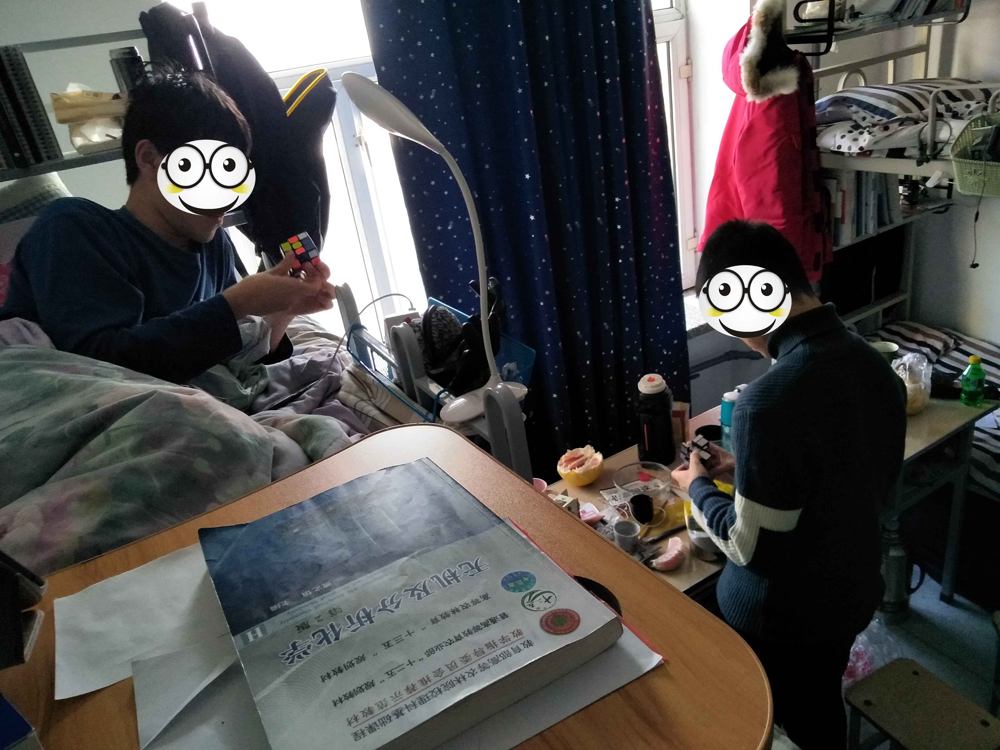
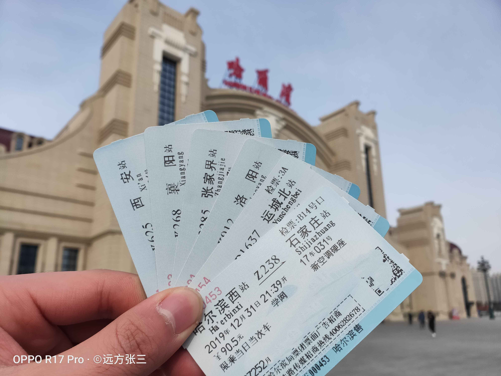
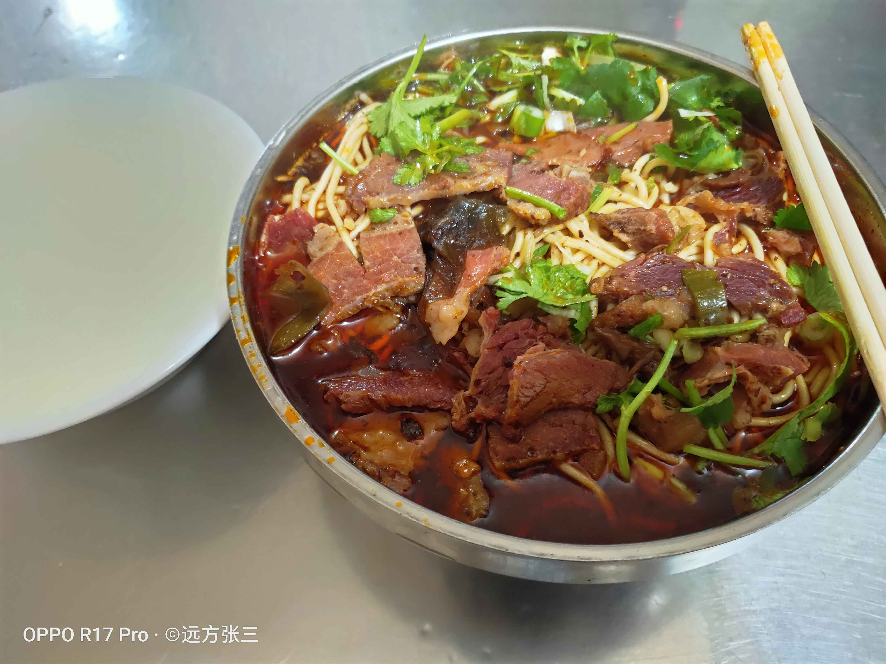
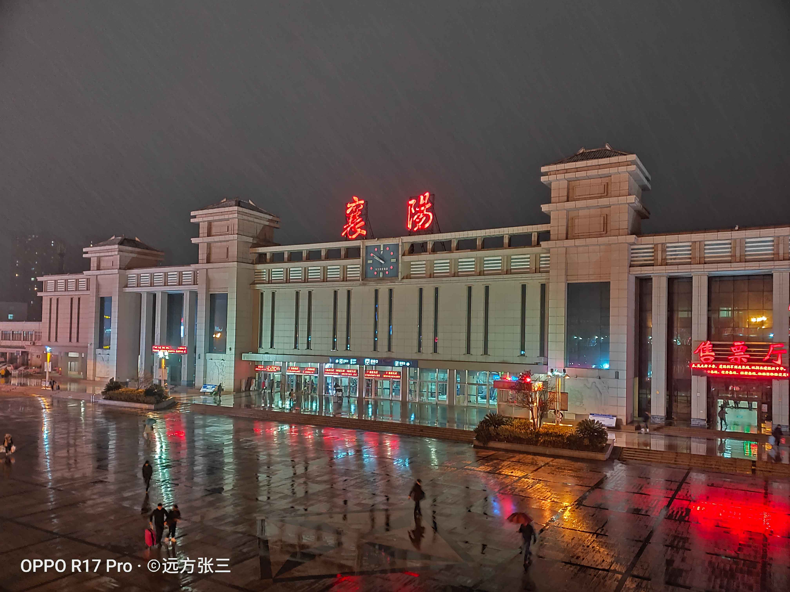
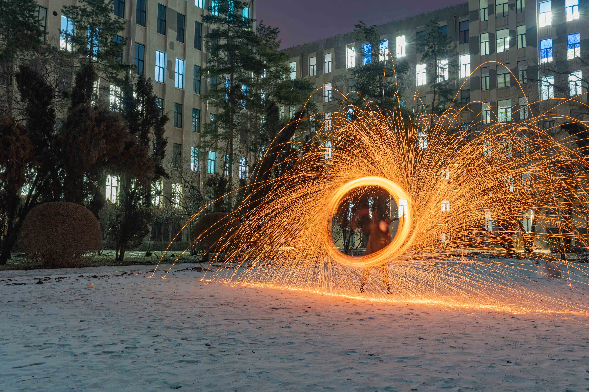

给Boss汇报完工作后，缓了一口气。真的不想再去想它，至少今天晚上不去想，尽管很有可能写的像SHIT一样。
大家都在告别2022了，还有两个小时。我翻了翻相册。
2018.12.27，应该是期末大考周，哈尔滨这时候最冷了，都在寝室待着不想出去。总得有个“天选之子”下楼拿外卖吧。然后老杨和狗比拼起了魔方，谁输了谁下去。两个有趣的灵魂。只是有点记不清当时谁赢了。那时候狗比应该还没有山东头铁的称号。

2018.12.31，考完高数大家吃了班饭，寝室跨了年。然后翻到了在冰雪大世界的合照，发消息给老胡：4年了。老胡说“转瞬即逝”，然后紧接着一声“唉”。
2019.12.31，拿着一沓车票，在回家的路上。在家没待两天就跑去了张家界，我也不知为啥偏挑了冬天去，天天下雨起雾，几乎啥也没看到。回来中转襄阳，吃了襄阳牛肉面，再配一碗黄酒。真好吃。虽然是一家“苍蝇”馆子。
但印象太深太深了，一直一直一直想再去襄阳一次，也一直存着那个经纬度坐标（LONG 112.147318；LAT 32.061938），这次我要加肉。“会为了美食去很远很远的地方”，老杨的评价。
回去没几天就疫情了。
  
2020.12.29，和老杨去乐松买大列巴，他说贼好吃。碰巧那天卖完了没买到，只能过几天回家前再去买。出来过马路时差点出车祸，老杨看情况不对，马上大声喊停了我。然后公交车疾驰而过，就差一步。救命恩人！什么事情都有可能是在一瞬间。
从那天开始，我知道，这是玩过命了。
2021.12.26，玩泼水成冰和钢丝棉光绘，被冻成狗。随后大家就陆续回家了。元旦的那天晚上，去了主楼一趟，出来时正好飘起雪。学校已经看不到什么人影了，食堂只有几个窗口还开着，11C的暖气凉的令人发指。
又待了两天。然后就剩师姐了。

2022.12.xx，在文献里挣扎，整日的脑力劳动。只是我还没有做好准备。痛苦、没有思绪、踌躇不前的时候，就想着Boss在我们几个回家前说的话，一直支撑着我往前走
如果要做的事情很难，当放着这件事不去管的时候，它会一直难下去；只有当你不断尝试解决的时候，它才有可能变得容易，并且更接近目标。
Boss回复我了……